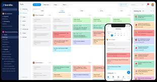
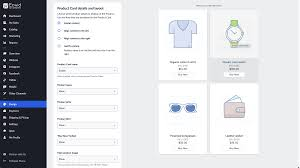

Hello! I’m mohammed turiaqi, a passionate web developer with a love for creating engaging user experiences. With a background in computer science and several years of experience in web development, I enjoy solving complex problems and building dynamic websites.
A web application that helps users track their daily tasks efficiently.
An e-commerce site with a focus on user-friendly design and secure transactions.
